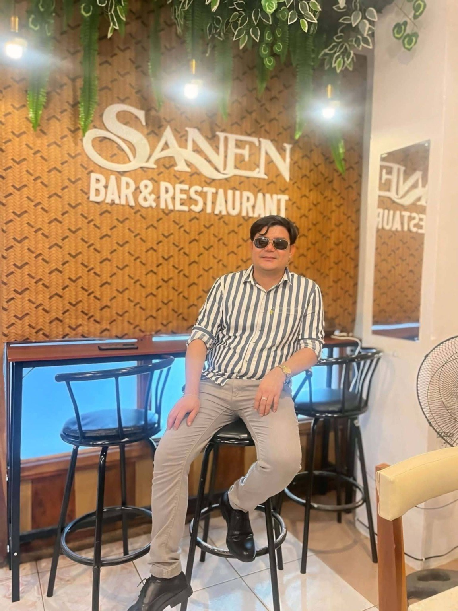

Understand
Learn web design terms, types of websites, design principles, and the roles of HTML and CSS.
Acknowledging the instructor who guides our learning in website planning, design, development, and presentation.

Our Web Design instructor introduces the class to the ideas and practical skills involved in creating useful, organized, and visually clear websites.
Across the course units, we study the foundations of web design, plan website content and navigation, explore HTML and CSS, and examine web-based platforms such as Google Sites. We also learn how to embed office tools, apply branding and style guidelines, improve accessibility, check mobile layouts, publish a site, and present the finished work.
This portfolio brings together those topics as a practical record of the learning process. The lessons encourage us to think about both the appearance of a website and the experience of the people who use it.
The eight units build knowledge step by step, from basic concepts to planning, creating, reviewing, and presenting a website.
Learn web design terms, types of websites, design principles, and the roles of HTML and CSS.
Plan the website, choose a platform, create pages, arrange content, and apply a consistent brand style.
Check accessibility, mobile responsiveness, navigation, publishing settings, and presentation quality.